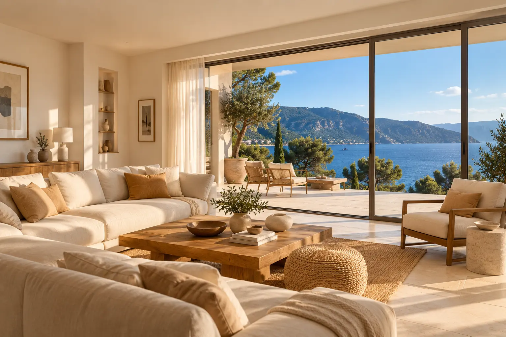
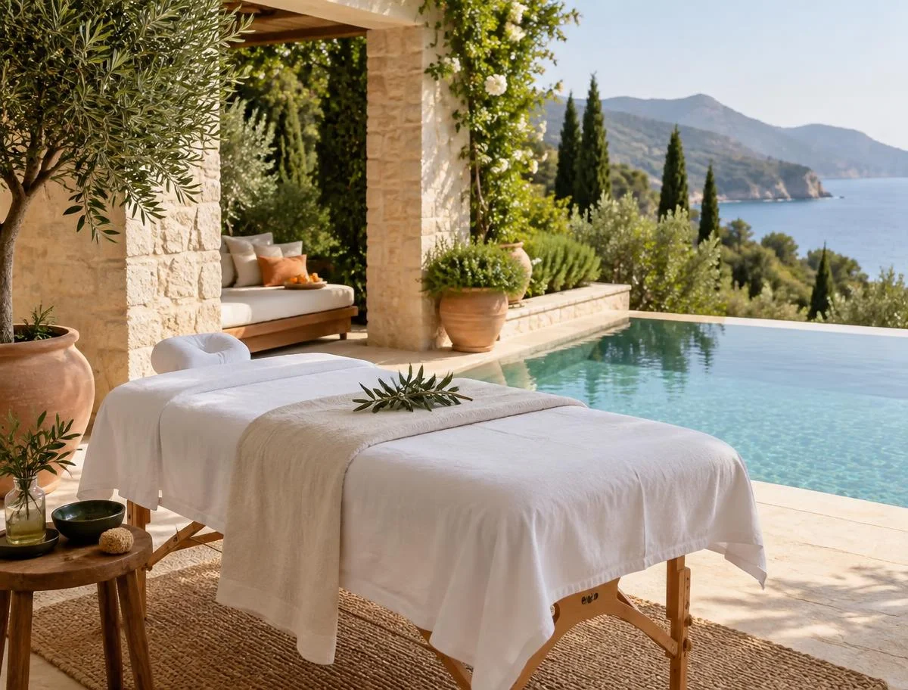

Source de recette NONA entièrement fictive, autorisée pour les essais de récupération et de structuration. Aucun service réel proposé.
Bienvenue à la Villa NONA TEST fictive, une maison lumineuse avec un patio.
Adresse : 12 rue des Oliviers, Ville de Test.
Arrivée à 16:00.
Départ avant 11:00.
Les clés sont remises par la réception à votre arrivée.
Wi-Fi disponible.
La cuisine comprend un four et un lave-vaisselle.
Capacité : 4 voyageurs.
Les fêtes sont interdites.
Le restaurant fictif Tamaris sert des légumes de saison.
Le bus des Collines dessert la gare.
Mot de passe Wi-Fi : SECRET_FICTIF_NONA.

